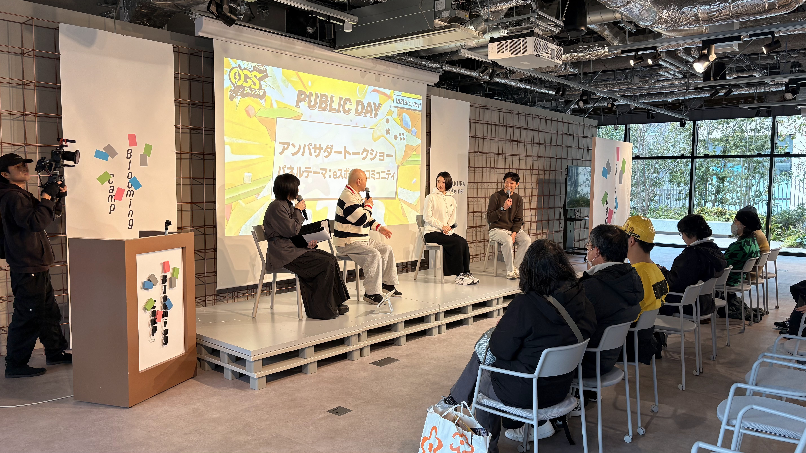

企業・学校・自治体向け
講演会の実施
社内eスポーツ勉強会、学校での業界セミナー、PRイベント、起業に関する講演まで、 目的に合わせて企画・登壇します。
COMMUNITY FIRST. OSAKA.
プレイヤーも、地域も、学校も、企業も。
ゲームコミュニティを大切に、
大阪のeスポーツをともに育てていきます。

NEWS
OUR PURPOSE
ゲーマーファースト。
ゲームコミュニティファースト。
大阪府eスポーツ連合は、ゲームを楽しむ人と、その文化を支える人を大切にしています。自治体・学校・企業とつながり、講演やイベント協力、マッチング、学生支援を通じて、挑戦できる場を広げます。
団体概要を見るWHAT WE DO
講演からイベント協力、学生支援まで。目的に合わせてご相談ください。
企業・学校・自治体向け
社内eスポーツ勉強会、学校での業界セミナー、PRイベント、起業に関する講演まで、 目的に合わせて企画・登壇します。

イベント主催者向け
体験会や大会に必要な機材相談、ゲームIP許諾の確認、イベント会社の紹介など、 現場づくりを支援します。

企業・学校向け
eスポーツ向けサービスや製品の相談、ビジネスマッチング、学生と企業の就職活動支援を行います。

自治体向け
大阪府が設立した大阪eスポーツラウンドテーブルへ参画し、 大阪府のeスポーツ産業の発展と振興に協力しています。

自治体・主催者向け
国スポ、ねんりんピック、ゲームIP主催イベントなど、国内外のeスポーツ関連イベントを大阪府へ誘致します。

会員・学生向け
会報、勉強会、交流会を通じて、会員と学生の学びを支援します。 JeSU大阪eスポーツ塾は現在準備中です。
EVENTS
関西のゲームコミュニティの今と、これから。佐加 一騎さん・竹村 龍樹さんを迎え、学びと交流の時間をつくります。
OSAKA EVENT CALENDAR
大阪で出会える、ゲームとeスポーツの大きな舞台。
JeSU関連、ゲームメーカー、プロチーム・配信者の主要イベントやフォームからご登録いただいたイベント等を公式発表からご紹介します。
外部イベントは各主催者による開催です。最新の日程・参加条件は公式サイトをご確認ください
| 日 | 月 | 火 | 水 | 木 | 金 | 土 |
|---|---|---|---|---|---|---|
| 1 | 2 | 3 | ||||
| 4 | 5 | 6 | 7 | 8 | 9 | 10 |
| 11 | 12 | 13 | 14 | 15 | 16 | 17 |
| 18 | 19 | 20 | 21 | 22 | 23 | 24企業主催 |
| 25企業主催 | 26JeSU関連 | 27 | 28 | 29 | 30 | 31 |
● 開催予定 × 中止 日付の印から詳細へ
情報確認：2026.10.20 ／ 毎週更新
JeSUが関わる予定（当日を含む） 1件
10/24（土）・10/25（日）11:00–18:00
ロブロックスのハロウィンワールドと、ぷよぷよプログラミングのオリジナルハロウィンアレンジを楽しめる体験会。
10/26（月）19:00–22:00
11/3（火）13:00–17:00
ゲーム開発者同士の情報交換・制作のための定期交流会＆もくもく会。
11/7（土）・11/8（日）10:00–18:00
大阪府の大規模eスポーツ大会開催支援の対象大会。和泉会場で予選を開催。
11/13（金）・11/14（土）・11/15（日）開始時刻未公表
世界のトップチームが賞金総額60万ドルとSix Invitational 2027出場権を争う国際公式大会。
11/14（土）・11/15（日）10:00–18:00
大阪府の大規模eスポーツ大会開催支援の対象大会。門真会場で予選を開催。
11/14（土）・11/15（日）09:00–18:00
なんばの街を巡って特別な狩猟・探索を楽しむ、メーカー協力の有料リアルゲームイベント。
11/28（土）10:00–18:00
高校生・大学生を対象にしたストリートファイター6の大会。
11/29（日）10:00–18:00
各予選を通過した参加者が集う決勝ラウンド・グランドファイナル。
12/5（土）13:00–22:00
BYOC（PC持ち込みゲーム）と音楽を楽しむ複合フェス。3Fゲームフロアは20:00まで。
12/26（土）10:00–19:00
プロスピAリーグ日本一決定戦などを実施予定のメーカー公式ファンイベント。
12/26（土）13:00–19:00
PC・ゲーム機・アナログゲームを持ち寄る交流イベント。「年末ゲーム交流会」と同時開催。
12/27（日）10:00–19:00
PC・ゲーム機・アナログゲームを持ち寄る交流イベント。「年末ゲーム交流会」と同時開催。
2027年 1/16（土）10:00
セガ公式全国大会の近畿地方大会。2部門を実施し、各優勝者が決勝大会出場権を獲得。
2027年 3/13（土）11:00–17:00
インディーゲームの展示・試遊イベント。ゲームを遊び、制作者と交流できます。
該当するJeSU関連の開催予定はありません。府内の予定は「これからの予定（全月）」からご覧ください。
eスポーツ関連イベントの掲載希望を専用フォームで受け付けています。
OUR CONNECTIONS
講演・機材協力・マッチングを通じて、大阪のeスポーツ振興に取り組んでいます。
大阪eスポーツラウンドテーブル（OeGG）への参画を通じ、地域のeスポーツ産業の発展と振興に協力しています。
OeGGについて ↗社内勉強会や学校での業界セミナー、体験会・大会への機材協力など、現場の目的に合わせた支援を行っています。
協力について相談する ↗会報、勉強会、交流会を通じて、会員・学生の学びと交流を支えます。JeSU大阪eスポーツ塾は準備中です。
会員資料（PDF）↗ABOUT US
ゲームを愛する人と、地域・企業・学校をつなぐ、大阪のeスポーツ団体です。
BOARD MEMBERS

代表理事
大阪から日本を元気に！

理事
大阪からゲームの楽しさとeスポーツの熱を世界へ発信します！

理事
積み上げられたゲームコミュニティ文化を尊重し、eスポーツとの調和を目指す。

監事
eスポーツのポテンシャルを信じています。
CONTACT
講演、後援、イベント協力、会員・連携のご相談をお待ちしています。